Aide de BrunoGUI GenII
BrunoGUI est une interface d'échecs : vous jouez contre un moteur (Stockfish par défaut, de 1320 à plus de 3000 Elo) ou contre un ami, et vous analysez vos parties comme avec ChessBase.
1. Démarrage rapide
- Menu Stockfish > Nouvelle partie contre Stockfish : choisissez votre couleur, la force du moteur et la pendule, puis OK.
- Jouez en cliquant sur une pièce, puis sur sa case d'arrivée. Les cases possibles sont marquées.
- Le moteur répond tout seul. Ses coups s'inscrivent sur la feuille de partie, à droite de l'échiquier.
- À la fin, cliquez sur Analyse rapide sous la feuille : le moteur juge chaque coup et donne votre précision.
- Menu Fichier > Enregistrer Partie pour garder la partie au format PGN.
2. La fenêtre principale
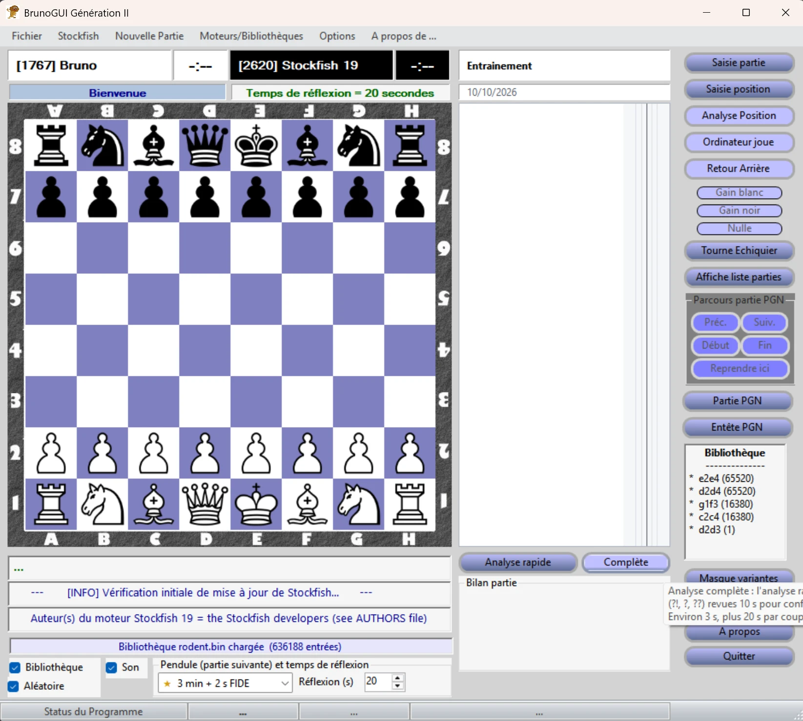
- En haut : les joueurs (« [Elo] Nom ») et leurs pendules.
- Au centre : l'échiquier. Les cases de départ et d'arrivée du dernier coup du moteur sont colorées.
- À droite de l'échiquier : le tournoi, la feuille de partie avec sa courbe d'évaluation, puis le cadre « Bilan partie » et les boutons d'analyse.
- Tout à droite : les boutons de jeu (Retour arrière, résultat, Tourne échiquier, Ordinateur joue…) et les coups connus de la bibliothèque d'ouvertures.
- Sous l'échiquier : trois lignes pour les variantes du moteur ou l'analyse du coup regardé, le choix de la pendule et du temps de réflexion, puis la barre d'état.
3. Jouer une partie
Contre Stockfish
Menu Stockfish > Nouvelle partie contre Stockfish. Rien ne change tant que vous n'avez pas cliqué sur OK : Annuler laisse la partie en cours intacte.
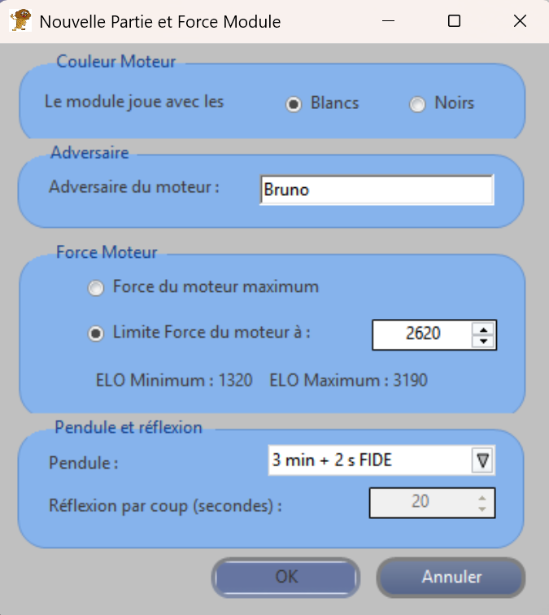
Contre un autre moteur, ou entre humains
- Menu Nouvelle Partie : Humain contre ordinateur (vous avez les Blancs), Ordinateur contre humain (vous avez les Noirs), ou Entre Humains : le moteur ne joue pas, pour une partie entre amis ou pour saisir une partie (aussi par le bouton Saisie partie).
- Le moteur utilisé est celui choisi dans le menu Moteurs/Bibliothèques (voir chapitre 11).
Pendant la partie
- Retour arrière annule le dernier demi-coup. Si c'est alors au moteur de jouer, l'échiquier attend : cliquez encore sur Retour arrière pour revenir à votre coup, ou sur Ordinateur joue.
- Ordinateur joue fait jouer le moteur dans la position actuelle : il prend le camp au trait, vous l'autre.
- Promotion : quand un pion arrive au bout, choisissez la pièce dans le cadre qui s'affiche.
- Tourne échiquier montre l'échiquier du côté des Noirs, ou des Blancs.
- Fin de partie : le mat, le pat, la triple répétition, la règle des 50 coups et le matériel insuffisant sont reconnus automatiquement. Les boutons Gain blanc, Gain noir et Nulle déclarent un abandon ou une nulle par accord.
- Une partie terminée peut reprendre : un Retour arrière annule le dernier coup et efface le résultat.
4. La pendule
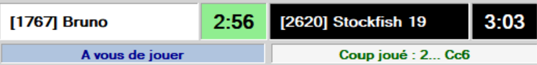
- La cadence se choisit dans la liste sous l'échiquier, ou dans la fenêtre de nouvelle partie. Elle vaut pour la partie suivante.
- Les cadences officielles de la FIDE (3 min + 2 s, 15 min + 10 s, 90 + 30 min) sont marquées d'une étoile dorée. « KO » signifie sans bonus par coup.
- La pendule démarre au premier coup. Un clic sur une pendule met la partie en pause, un autre clic la reprend.
- Le camp qui n'a plus de temps perd, sauf si l'adversaire ne peut plus mater (partie nulle). Le moteur aussi peut perdre au temps.
- Sans pendule, le moteur réfléchit le nombre de secondes indiqué dans « Réflexion (s) ».
- Le temps restant après chaque coup est enregistré dans le fichier PGN.
5. La feuille de partie
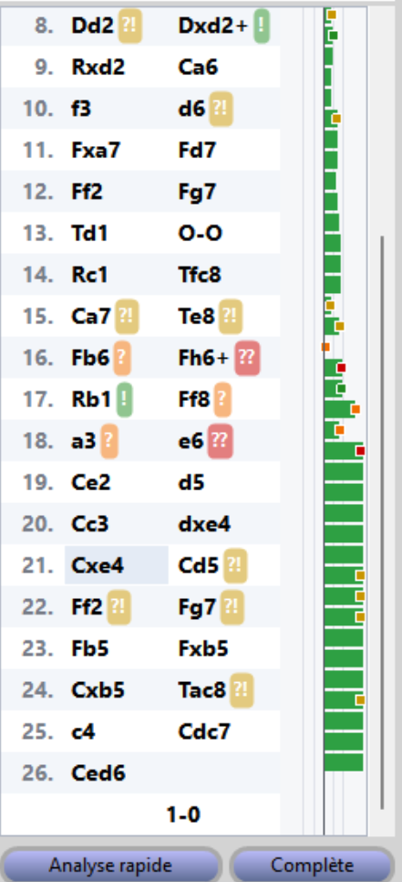
- Un clic sur un coup affiche la position après ce coup, sans changer la partie (le moteur peut continuer à jouer). Un clic sur l'échiquier ou le bouton Fin ramène à la partie.
- Les boutons Début, Préc., Suiv., Fin et le clavier permettent de parcourir la partie :
| Touche | Effet |
|---|---|
| ← / → | Demi-coup précédent / suivant |
| Début ou Page préc. | Position de départ |
| Fin ou Page suiv. | Retour à la partie |
| Échap | Désactive ces touches (pour taper du texte ailleurs) |
- Reprendre ici reprend la partie à la position affichée : les coups suivants sont effacés. Une partie chargée d'un fichier PGN devient ainsi une partie d'entraînement contre le moteur.
- Une flèche montre sur l'échiquier le coup regardé ; sur un coup annoté, une flèche verte montre le meilleur coup.
6. Les annotations
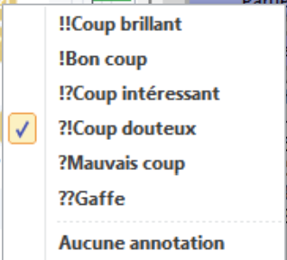
- Clic droit sur un coup pour lui donner une annotation : !! (brillant), ! (bon), !? (intéressant), ?! (douteux), ? (mauvais), ?? (gaffe).
- L'annotation s'affiche sur une pastille de couleur et elle est enregistrée dans le fichier PGN.
- Les annotations proposées par l'analyse de partie sont plus pâles. Les vôtres ne sont jamais remplacées.
7. Analyser une position
Le bouton Analyse Position fait réfléchir le moteur sur la position affichée (celle de la partie, ou celle que vous regardez dans la feuille) pendant le temps de « Réflexion (s) ».
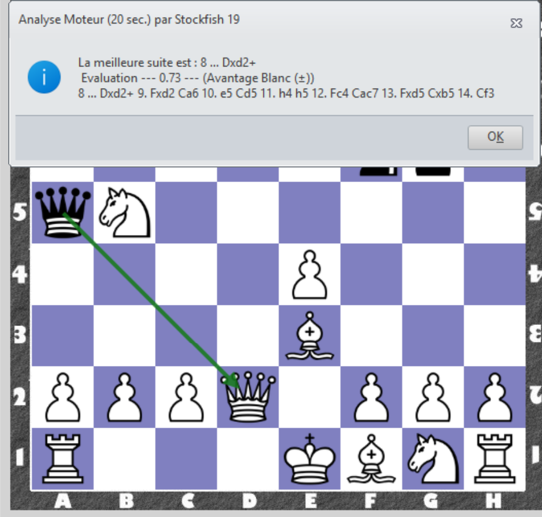
- Les évaluations sont toujours du point de vue des Blancs : +1.50 = les Blancs ont l'avantage d'un pion et demi, « M3 » = les Blancs matent en 3 coups.
- L'analyse se fait toujours à pleine force, même si le moteur est réglé plus faible pour jouer.
- Pendant l'analyse, la pendule s'arrête.
8. Analyser une partie
Sous la feuille, deux boutons lancent l'analyse de toute la partie :
- Analyse rapide : le moteur examine chaque position pendant 3 secondes, de la fin de la partie vers le début, comme ChessBase.
- Complète : en plus, les positions autour de chaque coup douteux, et de chaque « ! » ou « !! », sont revues pendant 10 secondes pour confirmer le jugement.
Pendant l'analyse, le bouton devient Interrompre : ce qui est déjà analysé est gardé. Survolez les boutons pour connaître la durée estimée.
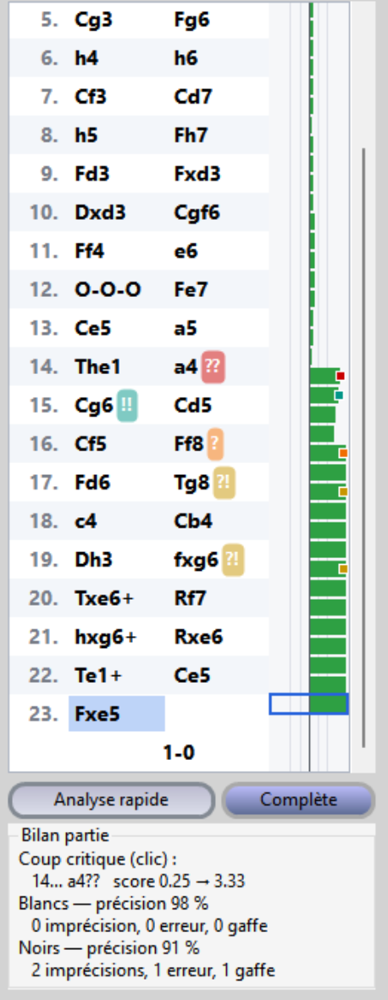
Le bilan
- Le coup critique est celui où la partie a basculé : un clic sur le bilan l'affiche.
- Pour chaque camp : la précision en % (100 % = tous les coups aussi bons que ceux du moteur) et le nombre d'imprécisions (?!), d'erreurs (?) et de gaffes (??).
- Un « ! » marque le seul bon coup d'une position difficile ; un « !! » un seul bon coup qui sacrifie du matériel.
La courbe d'évaluation
À droite des coups, une barre par demi-coup : verte vers la droite quand les Blancs sont mieux, rouge vers la gauche quand les Noirs sont mieux, jaune pour un mat. Un clic sur une barre affiche le coup.
Le détail d'un coup
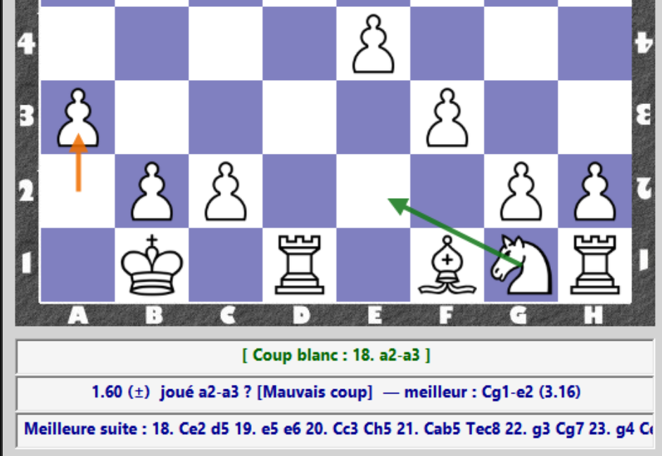
9. Fichiers PGN et FEN
Ouvrir des parties
Menu Fichier > Ouvrir fichier PGN : la liste des parties du fichier s'affiche. Double-cliquez sur une partie pour la charger.
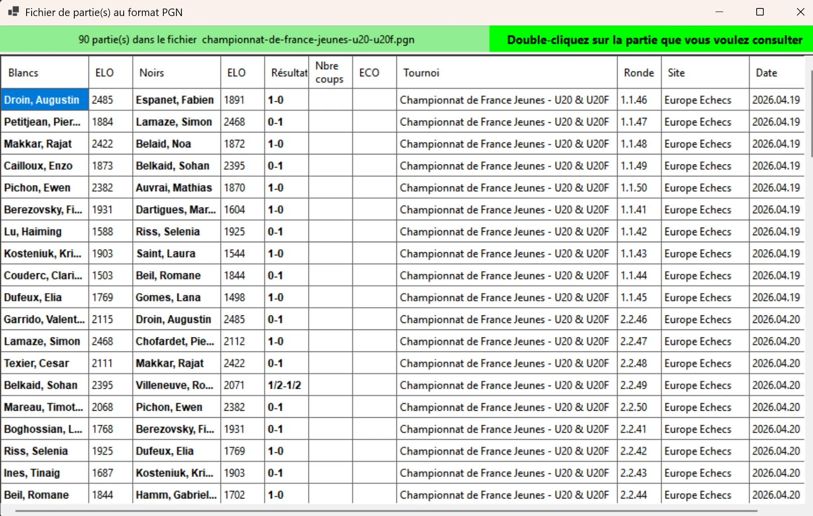
- Une partie chargée est en lecture seule : vous pouvez la parcourir et l'analyser. Ses commentaires, annotations, évaluations et temps sont repris.
- Pour la jouer à partir d'une position, utilisez Reprendre ici.
- Le bouton Affiche liste parties rouvre la liste.
- Menu Fichier > Ouvrir fichier FEN : charge une position ; vous jouez le camp au trait.
Enregistrer
- Fichier > Enregistrer Partie : la partie au format PGN. Si le fichier existe, vous pouvez l'ajouter à la fin ou remplacer le fichier.
- Fichier > Enregistrer Position : la position au format FEN.
- Le bouton Entête PGN modifie les informations de la partie (tournoi, lieu, date, joueurs, Elo, cadence).
- Le bouton Partie PGN montre la partie en PGN anglais ou français, en notation algébrique longue, en UCI ou en FEN.
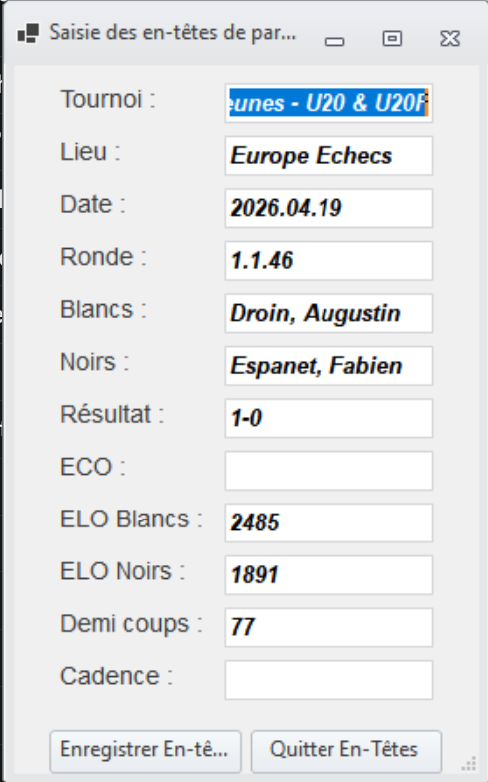
10. Saisir une position
Le bouton Saisie position ouvre un échiquier où placer les pièces à la main, en partant de la position affichée.
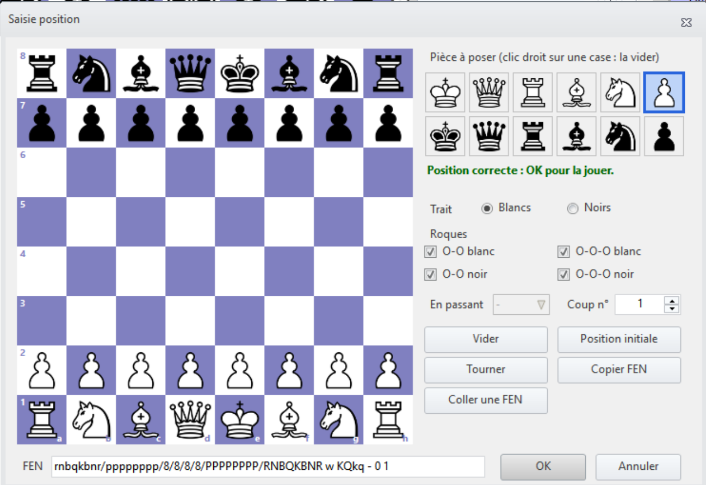
- Clic gauche : pose la pièce choisie (ou la retire si elle y est déjà). Clic droit : vide la case.
- Réglez le trait, les roques, la case en passant et le numéro du coup.
- Coller une FEN part d'une position copiée ailleurs ; Copier FEN copie la position saisie.
- OK n'est accepté que si la position est jouable : elle devient une nouvelle partie, vous jouez le camp au trait.
11. Moteurs et bibliothèques
- Stockfish est le moteur par défaut, l'un des plus forts du monde. Rodent IV (fort et polyvalent) et Sargon I (le premier moteur sur micro-ordinateur, 1978) sont fournis dans le menu Moteurs/Bibliothèques.
- Sélectionnez un moteur : tout autre moteur au protocole UCI.
- Sélectionnez une bibliothèque : un livre d'ouvertures au format Polyglot (*.bin). Des bibliothèques spécialisées sont fournies pour travailler une ouverture.
- À droite de l'échiquier, la liste des coups connus de la bibliothèque ; ⭐ marque celui que le moteur a joué. Les cases Bibliothèque et Aléatoire activent la bibliothèque et font choisir un coup au hasard, pour varier les ouvertures.
- Stockfish > Paramètres de base / Paramètres avancés : réglages du moteur (force, nombre de variantes, threads, table de hachage…). Ils sont facultatifs.
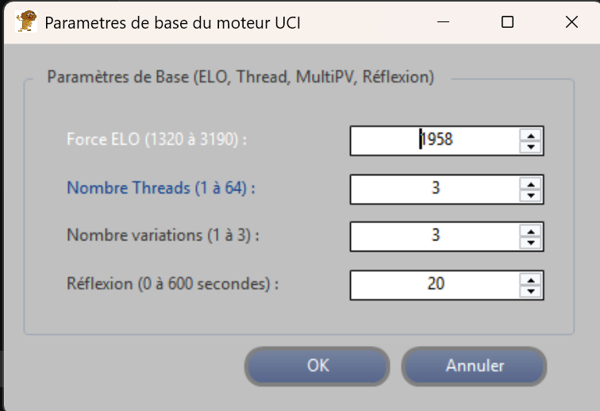
12. Options et langue
- Options > Personnaliser : les couleurs des cases claires et sombres.
- Options > Langue : français ou anglais. Le programme propose de redémarrer pour appliquer le choix.
- La case Son émet un son quand le moteur joue.
- Masque variantes cache les lignes de variantes sous l'échiquier ; Affiche protocole montre les échanges avec le moteur (pour les curieux).
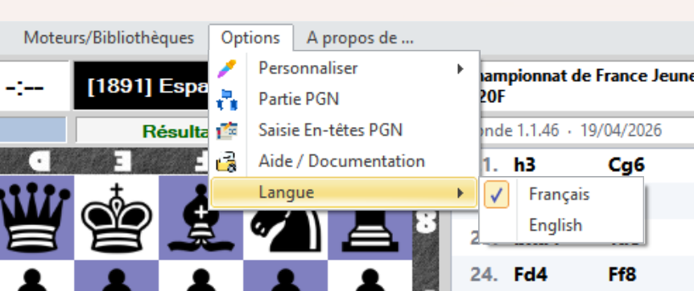
13. Mise à jour et fichiers du programme
- Mise à jour de Stockfish : le programme vérifie de temps en temps s'il existe une nouvelle version et propose de l'installer. Menu Stockfish > Verifier mise à jour StockFish pour vérifier tout de suite.
- BrunoGUI.ini, à côté du programme : les réglages par défaut (moteur, couleurs, palette…).
- BrunoGUI.preferences.ini : vos préférences, enregistrées à la fermeture (couleurs, nom, temps de réflexion, langue…). Supprimez-le pour revenir aux réglages par défaut.
- BrunoGUI.log : le journal des erreurs. Si un problème survient, ce fichier aide à le corriger.